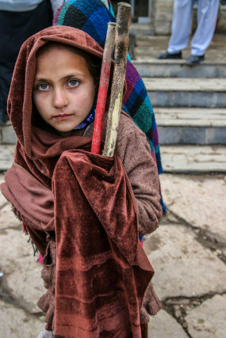
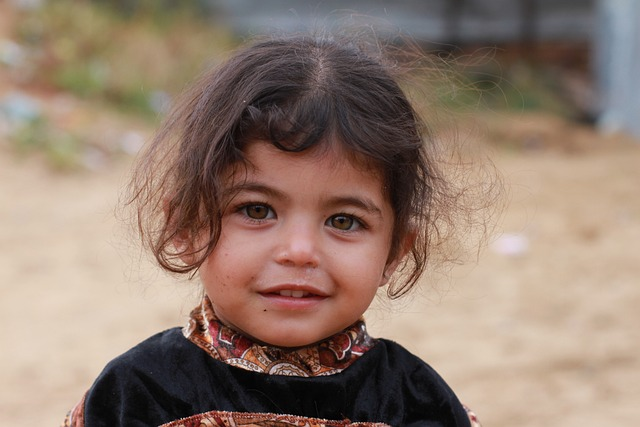
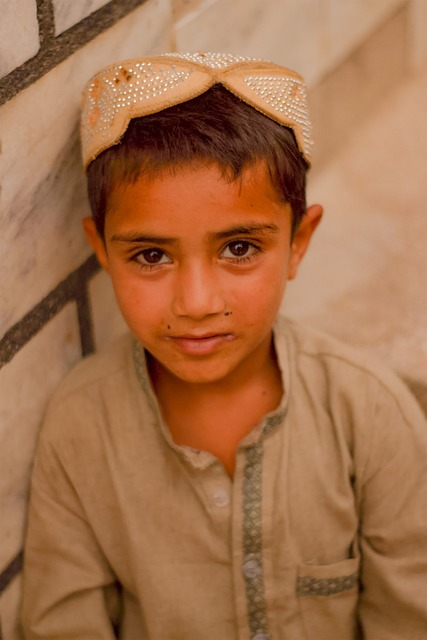
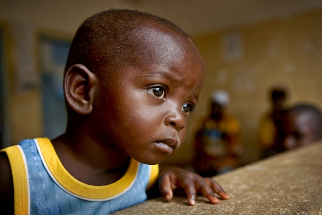
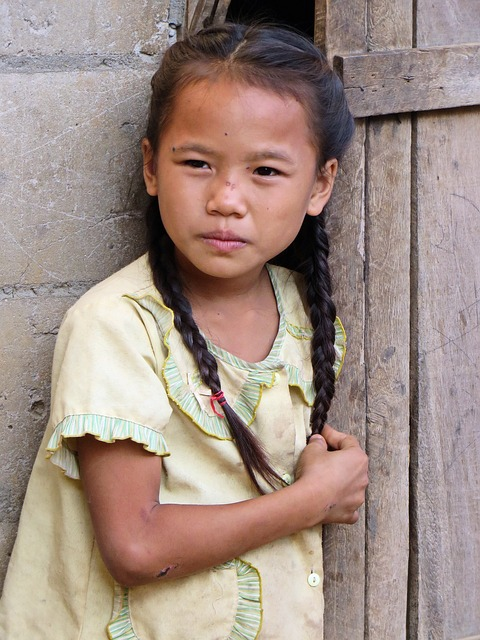

We are dedicated to improving the health and well-being of children in need.
Our programs provide essential healthcare services, including regular medical
check-ups, vaccinations, and treatment for illnesses. We work to ensure that
every child has access to clean water, nutritious food, and proper sanitation,
all of which are critical to maintaining good health. Additionally, we offer
mental health support and counseling to help children cope with the emotional
challenges they face. Through our health initiatives, we aim to give every child
the opportunity to grow up healthy and strong.

Some Testimonies

Maria lived in a rural area where many children, including her, were unvaccinated.
A health campaign provided vaccines and taught families their importance.
After receiving the necessary shots, Maria's health improved, and preventable
diseases like measles and polio were no longer a concern in her village.

Liam, a young boy affected by a natural disaster, struggled with trauma and
anxiety. A child mental health program offered counseling and emotional support.
Over time, Liam regained his confidence, started engaging in school again, and
his emotional well-being greatly improved.

John's village struggled with waterborne diseases due to a lack of clean
drinking water. A health initiative installed water wells and educated the
community on hygiene. Afterward, John and other children saw improved health
and a drastic reduction in illnesses like diarrhea, allowing them to attend
school regularly.

Sarah, a five-year-old from a remote village, was suffering from
severe malnutrition. With help from a child health program, she received
nutrient-rich meals and healthcare. Within months, Sarah gained weight and
returned to a healthy development path. Her mother also learned how to maintain
the family's nutrition.
I alone cannot change the world, but I can cast a stone across the waters to
create many ripples. We can do no great things, only small things with great
love. Each one of them is Jesus in disguise. It is not enough for me to be
compassionate. I must act. And to act is to care.
- Mother Theresa
Do You Want To Volunteer?
Volunteer with us to help needy children all around the world